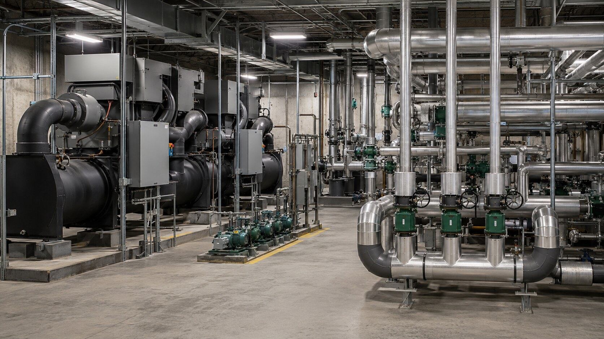
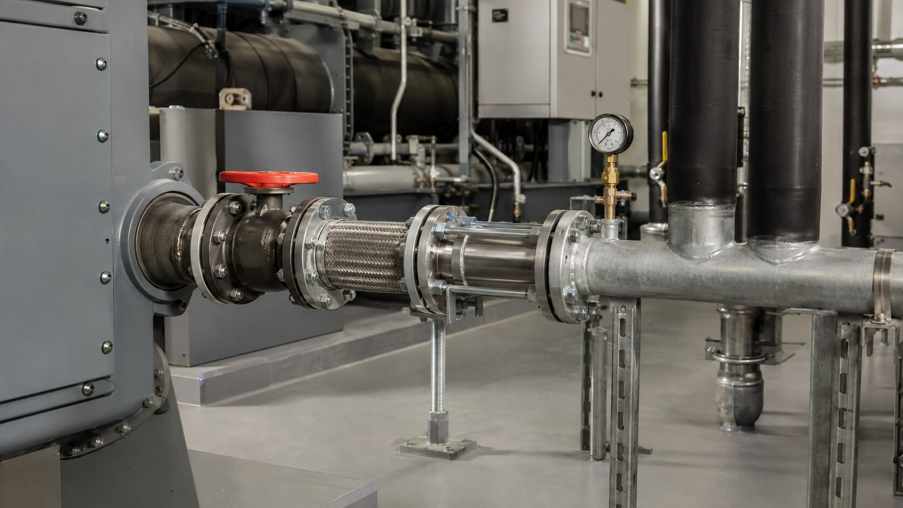
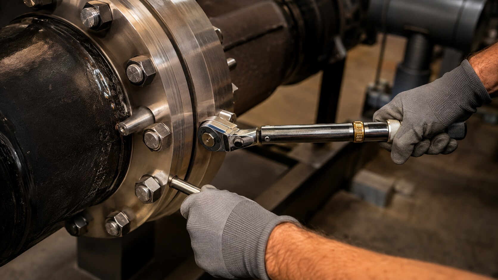

Advanced
Refrigeration Inc.
Equipment · controls · commissioning
About Colorado Commercial Cooling Systems
Formed by Colorado contractors who saw a better way to deliver complex chiller and cooling work.

Why we formed
Cooling plants depend on equipment, piping, controls, testing, and startup working together. When these decisions are made separately, conflicts often appear after equipment has been ordered or installation has started—when changes cost more and disrupt the schedule.
We bring equipment and piping expertise into the project early, while selection, access, routing, procurement, fabrication, installation, and turnover can still be coordinated.


Equipment · controls · commissioning
Fabrication · installation · tie-ins
How we work
We treat boundaries between scopes as problems to solve, not places to shift responsibility.
Startup and commissioning requirements are included in the plan from the beginning.
Access, isolation, maintenance, and future replacement matter after construction ends.
Quality records and clear closeout information are part of the deliverable.
Execution priorities
Chillers and cooling equipment
✓Machinery and accessories
✓Controls coordination
✓Shop pipe fabrication
✓Field installation
✓Testing and documentation
✓Bring us in early
We bring practical equipment, piping, installation, testing, and commissioning experience to projects where reliability and clear responsibility matter.
Start the conversation →